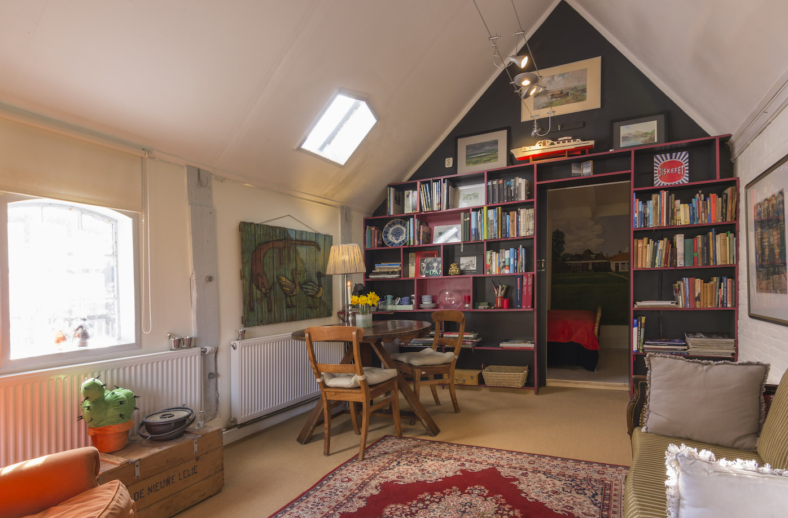

Welkom in ons oude boerenhuis, waar een deel van de voormalige stal omgetoverd is tot sfeervolle B&B, bijzonder ingericht met veel kunst aan de muur en een goedgevulde boekenkast. U heeft een eigen ingang met gezellige woonkamer, slaapkamer en eigen douche/toilet. Ontbijt is inbegrepen.
Een deel van de stal van het oude boerenhuis, waarin voorheen de koeien stonden en later, in de jaren 80, Galerie Toonbeeld gevestigd was, is nu omgetoverd tot een sfeervolle B&B met nog steeds veel kunst aan de muur en prachtige boeken in de boekenkast. Van de stal is het oude gebint nog goed herkenbaar. De gasten hebben de beschikking over een knusse woonruimte met grote eettafel en stoelen, een zitje met bank en fauteuil, televisie, internet wifi en koffie/theeapparatuur, ijskast en magnetron.
Een mooie slaapkamer met comfortabel bed en ensuite badkamer.
Knusse woonruimte met tafel, zithoek, televisie, ijskast en magnetron.
Mooie ensuite badkamer met toilet, wastafel en ruime douche.
Gasten kunnen altijd bij ons terecht voor vragen en/of informatie omtrent de mogelijkheden voor uitstapjes in de omgeving. De eigenaar van de B&B is stadsgids in Leeuwarden. Ook kunnen de eigenaren op verzoek een eenvoudige maaltijd bereiden. Een uitstapje met de sloep naar het nationaal park de Alde Feanen behoort ook tot de mogelijkheden.
Het mooie Friese dorpje Warga is bekend uit het boek Afke's Tiental van Nienke van Hichtum. In Warga is een kleine jachthaven en langs het dorp loopt de 'staande mastroute'. Dwars door het dorp loopt de Wergeaster feart, een aantrekkelijke alternatieve vaarroute vanuit de Friese Meren naar Noord Friesland en de Wadden. Het is er altijd gezellig druk met veel bootjesverkeer. Het dorp herbergt een ambachtelijke bakker, slager en supermarkt en pizzeria. Het "Ald Slot" is een klein museum. Leeuwarden met zijn historische binnenstad bevindt zich op 5 autominuten rijden. In Leeuwarden zijn in de zomer veel evenementen. In 2018 is Leeuwarden culturele hoofdstad van Europa.
Op 26 april 1888 legde de Wargaaster timmerman Ate Kamsma de laatste hand aan de bouw/verbouw van dit boerenhuis. Een stuk hout met daarop zijn handtekening vonden we achter op het bedschot. Nu zo'n 130 jaar later staat het resultaat van zijn arbeid nog fier overeind! Na boerenbedrijf, klompenhandel, agrarische winkel, groentehandel, galerie en atelier is het pand aan z'n zevende leven begonnen.
Bed & Breakfast "Het Zevende Leven" bevindt zich op ongeveer 10 minuten rijden van het centrum van Leeuwarden in het dorpje Warga. Door het dorp loopt een busroute. Er zijn parkeermogelijkheden vlak naast de B&B.
Voor reserveringen kunt u terecht op onze AirBnB website. Mocht u meer informatie willen, neem dan gerust contact op via onderstaand formulier.